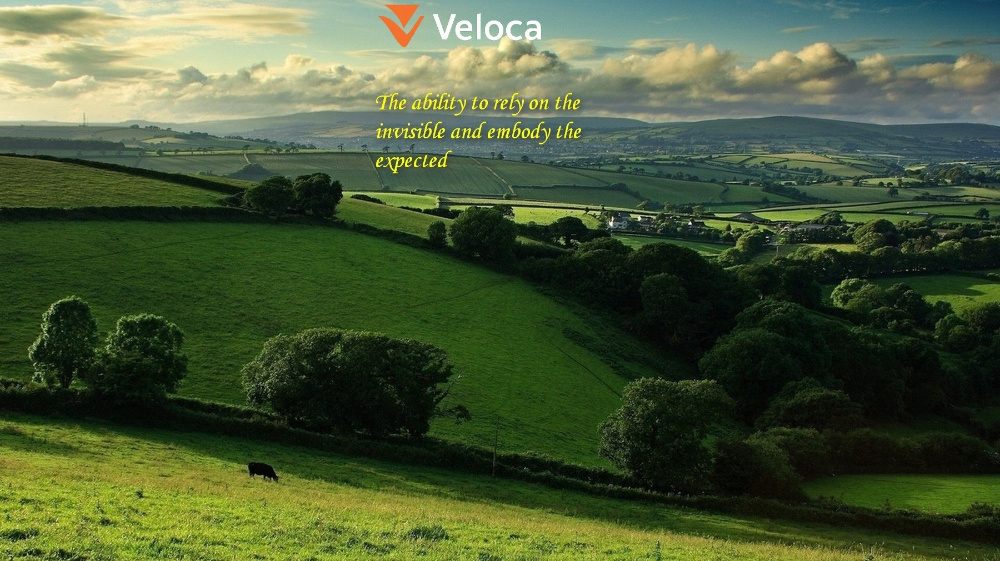
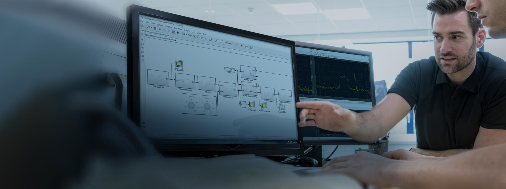

Kaggle Forum
New machine learning topics from the Kaggle forum.
Open channel →
Real projects in robotics, aviation, machine learning and embedded solutions.
Sergey Teterin Aleksandrovich, MAI, Moscow, Russia

MATLAB / Simulink · Python · C/C++

New machine learning topics from the Kaggle forum.
Open channel →Selected ideas from comments on news and opinion pieces.
Open channel →A selection of oil paintings offered for sale on eBay.
Open channel →Russian petitions concerning criminal proceedings, with a collected dataset.
Open channel →Alerts for important economic events, with a historical dataset.
Open channel →Artistic photography featuring people with tattoos.
Open channel →Engineering insights from the MathWorks blog.
Open channel →March 15, 2025
Reflections on the AI race, the power of technology companies and the question of control.
Read article →April 5, 2025
The idea of ludens in the Strugatsky brothers’ work: human evolution, superintelligence and the boundary between them.
Read article →Canvas paintings
Open to engineering collaboration, research and applied development in the following areas:
Get in touch to discuss engineering projects or automation.
If you want to help the development of projects or place an advertisement — Bitcoin wallet:16ATcBdaW29e3GNAf6WWT1GgEmGRpQV1a5